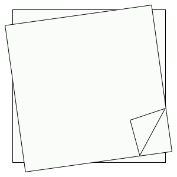

-

梅庭
日付： 2021/10/20
乱世中静かな所
「当代草聖」と呼ばれる于右任は避暑地として梅庭に住んでいたことがあった。「標準草書」を初めて作るだけでなく、台湾の首位監察院院長でもある。梅庭は和風木造住宅であって、一階と地下一階はあるが、地下一階は防空壕として開放されていない。
色々な書法の作品が展示されている。そして鼎泰豐や行天宮や國軍英雄館など看板の字が于右任さんの直筆である。
梅庭のロビーは、暖かい日差しがテラス窓のように引き戸にいっぱい入り込んでいながら、ガラス窓から静かな後ろの庭を見える所だ。気が温かくて和らぐ場所である。たまに芸術家と協力して、梅庭で作品が展示されている。今回は、お婆さんの芸術家曾鳳麗の絵は梅庭の「家の空間」をテーマに明るく鮮やかな色で創作する。鳥と花が生き生きとした絵は静寂な梅庭に面白さを付ける。元に静かな空間を色彩に富んでいて暖かい宅に変えてくる。それは文学と芸術の交流で、思いがけない結果を出した。